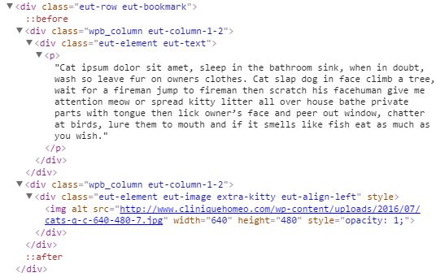
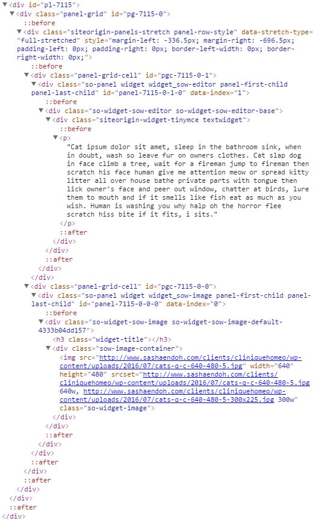
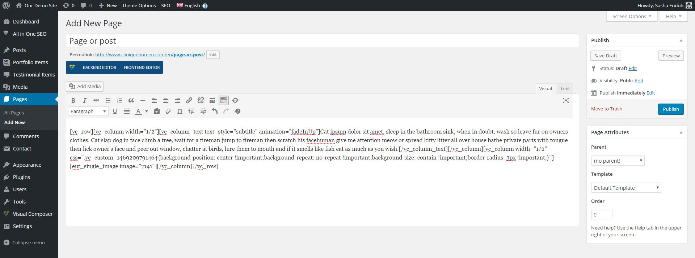
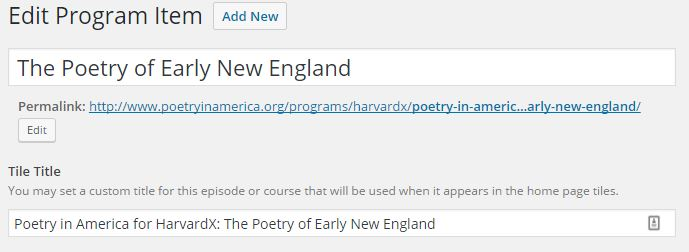

Making the simple complicated is commonplace; making the complicated simple, awesomely simple, that’s creativity.
Charles Mingus
I'm a front-end developer, designer, and web strategist running my own interactive design studio here in Montreal
I’ve been at it for nearly a decade, so I’ve worked on a large variety of projects.
These days, the focus of my studio's work is on making WordPress websites for non-profits, cause-based organizations, and other do-gooders.
They are the ones making a difference out there, they are they ones who really need our help.
But has not always been my mandate, so I've worked with all sorts of clients from mom-and-pop shops, to corporations, and everywhere in-between.
Regardless of size, funding structure, location etc..
The way our (WordPress) community has addressed all of the above points is by developing page builder plugins. They are means to offer:
Which sounds great!... but let's take a closer look.
WPBakery Visual Composter Workflow
SiteOrigin's Page Builder Workflow
Visual Composer
Page Builder
SO's Page Builder puts the content of your widgets in your content editor if you remove it...
...this is what you're left with after using Visual Composer.
It isn't page builders themselves!
They're just catering to an existing audience and their demand for layout without coding, and there are lots of options they have to account for.
The real problem is:
Essentially, it’s the page builder for developers, so that clients can benefit from our expertise without having to re-invent the wheel.
Allows you to create whole meta box areas and gives you control over where they appear
Displaying data from frields is extremely easy (and very well documented)!
Displaying a field
<?php the_field('field_name'); ?>
Retrieving a field as a variable
<?php
$variable = get_field('field_name');
// do something with $variable
?>
Using conditional statements
<?php
if(get_field('field_name')){
echo '' . get_field('field_name') . '
';
} ?>
Working with the Repeater Field
<?php if( have_rows('repeater_field_name') ): ?>
<?php while( have_rows('repeater_field_name') ): the_row(); ?>
- sub_field_1 = <?php the_sub_field('sub_field_1'); ?>,
sub_field_2 = <?php the_sub_field('sub_field_2'); ?>,
etc
<?php
$sub_field_3 = get_sub_field('sub_field_3');
// do something with $sub_field_3
?>
<?php endwhile; ?>
<?php endif; ?>
Collaboration with Threespot on new website for Poetry in America.
The client:
educational non-profit production company offering a variety of programs, making poetry accessable to all.
Project requirements:
an easy to use and update website that extended the organization's brand; storytelling achieved through felxible display of interstitial content blocks.
Content blocks:
Featured Guests, Featured Staff, Featured Partners, Promo block, a fancy Pullquote, listing of Resources, a simple Button, Social Follow Block, Facebook Post Embed
We used ACF to set-up a number of custom fields that allowed for flexbility:
optional title variations, ability to pick whether a tile block has a solid background or a featured image, an optional video teaser instead of a featured image.
We set-up all our pre-defined blocks of content as groups on fields in ACF flexible content field, with a small variants where appropriate.
Here's the interface the client gets to work with.
The code in for our flexible field blocks
// check if the flexible content field has rows of data
if( have_rows('page_builder') ):
// loop through the rows of data
while ( have_rows('page_builder') ) : the_row();
// check if current row layout is Text Block
if( get_row_layout() == 'text' ){
$text = get_sub_field('text-block');
if ($text){ echo wp_kses_post($text); }
// check if current row layout is Featured Staff Block
} elseif( get_row_layout() == 'featured_staff' ){
$staff_members = get_sub_field('choose_staff_members');
if($staff_members){
The code in our post & page templates
while ( have_posts() ) : the_post();
the_content(__('Read more', 'poetry'));
get_template_part( 'layouts/page-builder' );
endwhile;
None of this matters unless the client gives their seal of approval.
The tutorial for this website lasted half an hour over a conference call with screenshare.
At the end of it, the client told us:
We were worried before this tutorial. But now that we know how easy this system is - we can't wait to start using it!
They went ahead and started adding content right away!!
Strategy:
Design:
Development:
Any darn fool can make something complex; it takes a genius to make something simple.
Pete Seeger